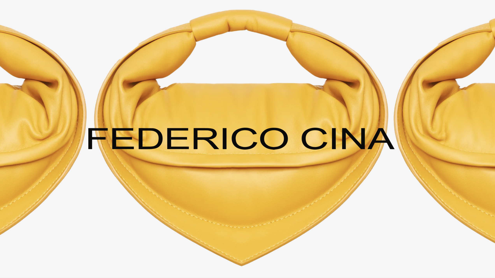
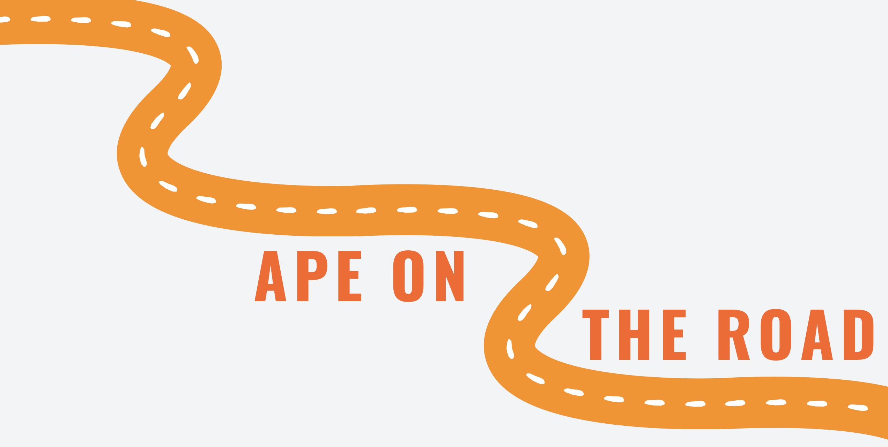
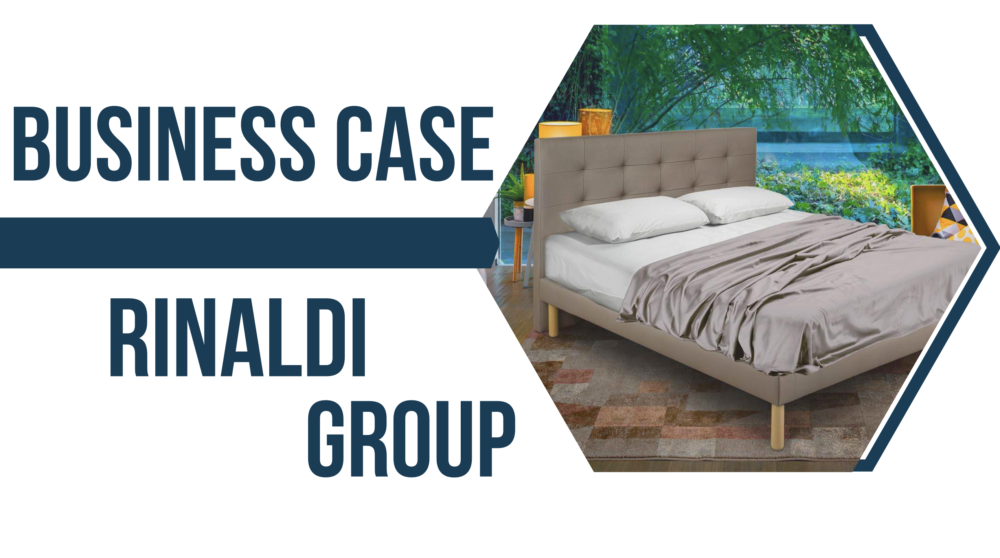
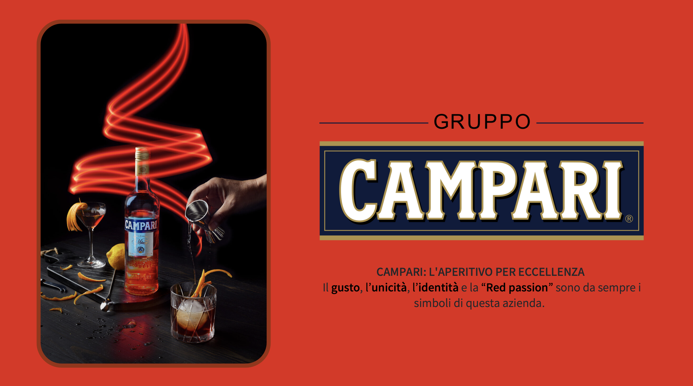

Development of an integrated communication campaign for Federico Cina’s Tortellino Bag, blending tradition and innovation to celebrate Romagna’s heritage. The project combines digital storytelling, social media strategy, and experiential marketing to enhance brand visibility. Focused on emotional luxury and authentic Italian craftsmanship.
Creation of a phygital campaign for Maison Margiela’s REPLICA fragrances, merging scent, memory, and technology through immersive experiences. The 'Box of Meaning' project reimagines perfume discovery via AI, VR, and storytelling, turning fragrance into a personal emotional journey. Developed art direction, media strategy, and digital user experience aligned with Margiela’s minimalist DNA.
Self-Entrepreneurship and Social Business course

‘Ape on the Road’ is an original concept developed from scratch as a social enterprise project. It aims to reintegrate socially disadvantaged individuals into the workforce by transforming confiscated vehicles into mobile bars. The initiative supports social inclusion and professional growth, promoting equal opportunities and community well-being. This project is not based on any existing association, but rather was created as a new model combining economic sustainability, innovation, and ethical values.
Theories and Techniques of Social Research course
This project analyzes young people's mobility choices through both qualitative and quantitative research, focusing on their preferences for private versus public transportation, their sensitivity to environmental issues, and their expectations for future mobility. Using in-depth interviews and structured surveys with young adults in Rome and central Italy, the study explores how sustainability and economic convenience influence their decisions. The research was developed from scratch and offers insights to support more eco-friendly and innovative mobility solutions.

This business case analyzes Rinaldi Group’s strategy and market positioning in the Italian mattress industry, focusing on product innovation and sustainability. Through market and PEST analysis, it explores opportunities and threats, highlighting Rinaldi’s use of certified eco-friendly materials, patented technologies, and digital tools to enhance customer experience. The project also proposes the launch of 'Oceano,' a new line of luxury water mattresses with advanced features for comfort and well-being. Developed independently, this analysis aims to offer actionable insights to strengthen the brand image and support growth in a competitive market. With this project. This project was made to participate in the XXXV edition of the 'Premio Marketing per l'Università organized by the Italian Marketing Society.
Corso Corporate Promotions and Revenue Management course
This project was developed as part of a workshop focused on the Capofaro estate, located on the island of Salina. It analyzes brand perception, marketing strategy, and hospitality trends through competitor benchmarking, market research, and creative proposals. The work includes recommendations for expanding the guest experience, strengthening partnerships, and enhancing digital presence, while promoting sustainable luxury and authentic Sicilian hospitality.
Business Economics and Investor Relations course

In-depth analysis of Campari Group, focusing on corporate strategy, investor relations, and market positioning in the global branded beverage sector. The project evaluates financial performance, growth strategies, governance, and sustainability management, providing an overview of development opportunities and relationships with institutional stakeholders and investors.
Economics and Business Management course
This project presents a strategic analysis of E-GAP, one of the first companies to introduce rapid, on-demand mobile charging services for electric vehicles in Italy and across Europe. The work evaluates E-GAP's innovative business model, market expansion, value proposition, and competitive position, with particular attention to sustainability, technology integration, and opportunities for financial growth. Recommendations are provided to enhance marketing, secure new funding, and improve operational margins in a rapidly evolving e-mobility sector.